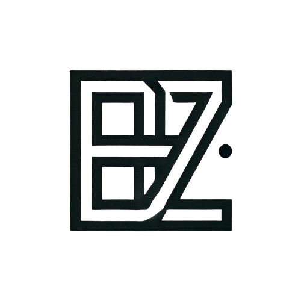

Software Engineering Student · Computer Vision Researcher · Future Cybersecurity Graduate
Low-light Vision & Vision-Language Reasoning
CV / VLM / Defect Diagnosis / Security
UAVP, MeDRNet, NoteForge
Press Ctrl + K to search